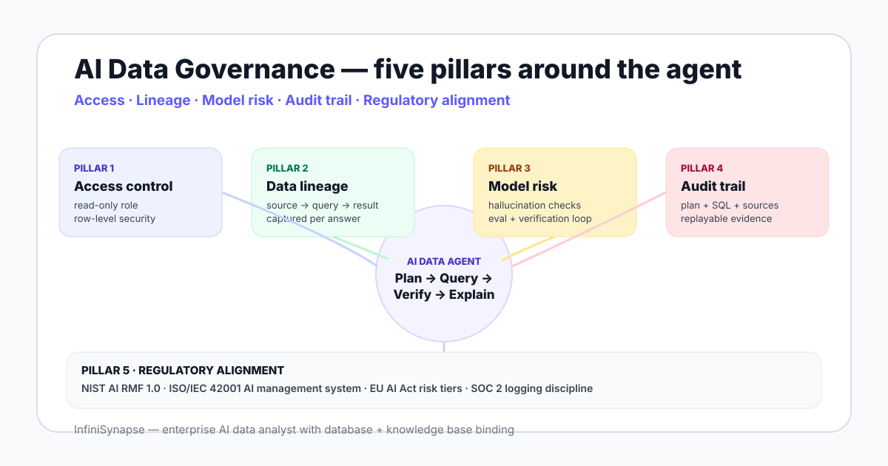

AI Data Governance: A Practical Framework for Enterprise Analytics in 2026
A five-pillar framework for governing AI data agents in the enterprise — access control, data lineage, model risk, audit trail, and regulatory alignment with NIST AI RMF, ISO/IEC 42001, and the EU AI Act.
AuthorInfiniSynapse Research, security and data architecture team
Published2026-06-28 · Last verified 2026-06-28 · Next review 2026-09-28
Evidence baseNIST AI RMF 1.0, ISO/IEC 42001:2023, EU AI Act, BIRD benchmark, public security postmortems, InfiniSynapse deployment notes.
Disclosure: This page is published by InfiniSynapse, which builds an enterprise AI data analyst that ships with database + knowledge base binding, Plan-mode review, and an evidence trail. We use our own product as one example, but the framework, control matrix, and checklist are written so a security team can apply them to any AI data agent — including ones that compete with us.
TL;DR
AI data governance is data governance plus three new layers: model risk, tool-use logging, and explainability. You need both, not one or the other.
The working framework has five pillars — access control, data lineage, model risk, audit trail, and regulatory alignment.
Map each pillar to NIST AI RMF, ISO/IEC 42001, and the EU AI Act so a security or legal reviewer can sign off against a recognized standard, not a marketing page.
An AI data agent ready for enterprise use exposes its plan, queries, retrieved context, and verification step — not just an answer string.
Run a 30-day shadow period before stakeholders see results. Promote permissions only when shadow accuracy and zero-exfiltration are confirmed.
Direct answer: what does AI data governance for analytics require?
AI data governance is the set of policies, controls, and evidence practices that decide who can ask an AI system what, which data the system may read, how the result is verified, and how every step is recorded for audit. It extends classical data governance with model risk, prompt and tool-use logging, and alignment with NIST AI RMF, ISO/IEC 42001, and the EU AI Act.
What AI data governance actually means
Most enterprise data teams already run a governance program: data definitions, owners, quality checks, access policies, retention rules. AI data governance is not a replacement — it is an additional layer that answers a different question. Classical governance asks is this data correct and who can read it? AI governance asks can we trust what the system did with that data, and can we replay the reasoning?
The shift matters because an AI data agent does not behave like a BI dashboard. A dashboard reads pre-modeled metrics that an analyst already validated. An agent picks tables, joins them, writes SQL, and explains the result on the fly — every run can take a different path. Governance has to cover the path, not just the inputs.
The three new layers AI governance adds
Model risk. The agent can hallucinate, misread a schema, or be steered by prompt injection. You need evaluation sets and verification loops, not just unit tests on data.
Tool-use logging. Every retrieval, every SQL query, every external API call the agent invokes must be captured with parameters and outputs. Without this you cannot reconstruct what happened.
Explainability. A reviewer needs to read the plan, the queries, and the sources behind a result and reach the same conclusion. Explainable AI data analysis describes the artifacts the agent must publish.
Why now — the 2026 inflection point
Three forces have pushed AI data governance from a research topic into a board-level requirement. The EU AI Act entered into force in August 2024 and its high-risk obligations kick in across 2026 and 2027. ISO published ISO/IEC 42001 in late 2023, giving organizations the first auditable AI management system standard. And the NIST AI Risk Management Framework has become the de facto reference U.S. enterprises cite in security reviews.
At the same time, agentic analytics has moved from demo to deployment. Anthropic's writeup on building effective agents formalized the pattern of plan, tool use, and verification that most production AI data analysts now follow. Once an agent can write its own SQL against a production warehouse, governance stops being optional.

The five-pillar framework
The framework below is the working pattern we apply with security and data architecture teams approving an AI data agent for warehouse access. Each pillar is a control surface, and each control surface maps to one or more clauses in NIST AI RMF and ISO/IEC 42001. Treat it as a starting matrix, not a final answer — your industry will add specifics.
Pillar 1 — Access control
The agent receives a scoped read-only role, not a human's credentials. Privileges are granted per schema, never per cluster. Row-level security policies that protect humans must also apply to the agent's role; if a salesperson cannot see the EU customers table, the agent acting on their behalf cannot either. Service accounts rotate keys on a fixed schedule, and the audit log captures every authentication.
Pillar 2 — Data lineage
Every result must carry its lineage: which sources were read, which tables and columns, which transformations were applied, and which rows formed the basis of the answer. Without lineage, a stakeholder cannot tell whether yesterday's revenue number used last week's exchange rate. A good agent captures lineage automatically because it issues the SQL itself.
Pillar 3 — Model risk management
Model risk is the new pillar. You measure it the same way you measure credit risk — with a written policy, an evaluation set, and a periodic review. The evaluation set should include known-answer questions, edge cases that exposed problems in prior runs, and prompt-injection probes. Public benchmarks such as BIRD and Spider are useful for calibration but no substitute for your own enterprise eval set.
Pillar 4 — Audit trail
The audit trail must capture the user question, the retrieved business context, the plan the agent proposed, every SQL or tool call executed, the verification step, and the final result with sources. The trail must be immutable and replayable so a reviewer can rerun the analysis and reach the same answer. This is the artifact a finance or compliance reviewer asks for when challenging a number.
Pillar 5 — Regulatory alignment
The first four pillars are the controls; the fifth is the language you describe them in. Mapping your controls to NIST AI RMF, ISO/IEC 42001, and the EU AI Act lets a security reviewer recognize them. The mapping is also defensive — if a regulator asks how your AI analytics complies with the EU AI Act's logging requirements, you point to the audit trail pillar with the article citation already attached.
Mapping the five pillars to recognized standards
Pillar
NIST AI RMF function
ISO/IEC 42001 clause area
EU AI Act relevance
Control artifact
1. Access control
Manage
A.7 Resources, A.8 Operation
Article 10 data governance
Read-only role grants, RLS policies
2. Data lineage
Map, Measure
A.6 Planning, A.9 Performance
Article 12 record-keeping
Source-to-result lineage per query
3. Model risk
Measure, Manage
A.9 Performance evaluation
Article 15 accuracy and robustness
Eval set, hallucination report
4. Audit trail
Govern, Manage
A.8 Operation
Articles 12, 13 transparency
Replayable plan + queries + sources
5. Regulatory alignment
Govern
A.4 Leadership, A.5 Policies
All articles
Written control matrix, risk register
A governance program is not the documents you wrote. It is the controls a reviewer can see running in production on a Tuesday afternoon.
AI data governance tools — categories that matter
The tool landscape is noisy because vendors stretch the term "governance" to cover anything from a data catalog to a model registry to a prompt firewall. Treat the categories below as the buying map; each one covers one or two pillars but no single product covers all five.
5
Governance pillars an enterprise AI data agent must cover before it touches a production warehouse.
2024
The EU AI Act entered into force in August 2024; high-risk obligations apply across 2026-2027. Source: EU AI Act
42001
ISO/IEC 42001 is the first auditable AI management system standard, published in 2023. Source: ISO
The five tool categories
Identity and access — SSO, service accounts, role-based access control, row-level security. Covers Pillar 1.
Data catalog with lineage — column-level lineage, ownership, definitions. Covers Pillars 1 and 2.
Model risk and evaluation — eval harnesses, hallucination scoring, red-team probes, drift detection. Covers Pillar 3.
Immutable audit log — append-only log of plan, queries, retrievals, and outputs, with replay. Covers Pillar 4.
AI data agent with explainability built in — exposes its plan, runs verification loops, attaches sources to every result. The agent itself is part of the governance surface, not just a consumer of it.
This is where AI-native platform design diverges from bolt-on governance. A bolt-on approach wraps a black-box LLM with policies after the fact; an AI-native agent emits the artifacts a reviewer needs as a side effect of doing its job. InfiniSynapse's plan-mode and database + knowledge base binding are designed against this principle — the evidence is a primary output, not an afterthought.
Security team approval checklist
Use the checklist below when a business unit asks for production access for an AI data agent. It is the same checklist we run with customers evaluating AI database query systems against their warehouse.
Check
What to verify
Pass criterion
Role scope
Agent has a dedicated read-only role with grants per schema, not cluster-wide privileges
Grant matrix matches business need; no SUPERUSER
RLS coverage
Row-level policies that protect humans also protect the agent role
Spot-check on three sensitive tables passes
Plan review
Agent surfaces the plan and SQL before execution on sensitive tables
Plan-mode is on by default for the role
Audit log
Every query is logged with parameters, output count, and verification result
30 days of replayable logs available
Eval set
10-30 known-answer questions including edge cases and a prompt-injection probe
Eval accuracy meets agreed threshold
Shadow period
Results reviewed for 30 days before stakeholders see them
Zero exfiltration, agreed accuracy
Knowledge base binding
Business definitions are bound to the data source and retrieved before SQL
Sampled answers cite the right definitions
Standards mapping
Each control mapped to a NIST AI RMF function and ISO/IEC 42001 clause
Control matrix signed by security lead
Common AI data governance mistakes (and how to avoid them)
Treating AI governance as a copy of data governance. The two overlap but the model-risk, tool-use, and explainability layers are new. You need both programs running side by side.
Granting cluster-wide privileges for convenience. A read-only role is not safe if it can read every schema. Scope by schema, then by table where it matters.
Skipping the shadow period. Letting an agent's first thirty answers reach stakeholders without review is how confident-but-wrong numbers escape into board decks.
Auditing only the final answer. A number without a plan, a query log, and a verification step is not auditable. The trail must include the path, not just the output.
Believing a vendor that says "compliant with the EU AI Act". Compliance is a system-level property of how you deploy the tool, not an attribute of the tool itself. Ask for the control matrix.
Bolting governance on after the fact. If the agent cannot emit a plan and an evidence trail, no amount of wrapping will produce one. Pick an agent that treats evidence as a first-class output.
When this framework applies
You are approving an AI data agent for warehouse or transactional database access
You need a control matrix mapped to recognized standards
Security, legal, or compliance reviewers must sign off before production
Stakeholders will quote results in board materials or regulatory filings
When it is overkill
You are exploring an AI tool on a sandbox dataset with no production access
The agent only runs on synthetic or fully anonymized data
A single engineer is the only consumer of the output
No regulated industry obligations apply
See an AI data agent that ships with the evidence trail built in
Connect a read-only role, bind a business knowledge base, and run a question with plan-mode on. Review the plan, the SQL, the verification, and the sources before the result reaches a stakeholder — exactly the artifacts your security team needs to approve production access.
AI data governance is the set of policies, controls, and evidence practices that decide who can ask an AI system what, which data the system may read, how the result is verified, and how every step is recorded for audit. It extends classical data governance with model risk, prompt and tool-use logging, and alignment with NIST AI RMF, ISO/IEC 42001, and the EU AI Act.
How is AI data governance different from data governance?
Data governance covers people, definitions, and data quality. AI data governance adds three layers: model-side risk such as hallucination and prompt injection, tool-use logging for every query and retrieval the agent performs, and explainability so a reviewer can replay the reasoning behind a result. You need both — AI governance does not replace data governance, it sits on top of it.
What does an AI data governance framework include?
A working framework includes five pillars: access control with read-only roles and row-level security, data lineage from source to result, model risk management with verification loops, an audit trail that captures plan and SQL and sources, and regulatory alignment with NIST AI RMF, ISO/IEC 42001, and the EU AI Act. Each pillar maps to controls a security reviewer can sign off on.
Which AI data governance tools should an enterprise evaluate?
Evaluate the categories rather than chasing vendor lists. You will need an identity and access layer, a data catalog with lineage, a model risk and evaluation tool, an immutable audit log, and an AI data agent that exposes plan and evidence. Some platforms cover several pillars; very few cover all five, so plan for integration work and a written control matrix.
How does NIST AI RMF apply to an AI data agent?
The NIST AI Risk Management Framework gives you four functions — govern, map, measure, manage. For a data agent that means writing the policy of acceptable use, mapping every data source and tool the agent can call, measuring accuracy and hallucination on a held-out evaluation set, and managing residual risk with human review checkpoints before production runs.
Does the EU AI Act regulate analytics AI agents?
The EU AI Act classifies systems by risk tier. Most enterprise analytics agents fall into the limited-risk or general-purpose AI category, but if outputs drive decisions about credit, hiring, or critical infrastructure the system can be classified as high-risk and inherit transparency, logging, and human oversight obligations. Treat the classification work as a governance task, not a legal afterthought.
What audit trail must an AI data agent produce?
The audit trail must capture the user question, the retrieved business context, the plan the agent proposed, every SQL or tool call executed, the verification step, and the final result with sources. It must be replayable so a reviewer can rerun the analysis and reach the same answer. Without this, you cannot defend a number to a finance, security, or regulatory reviewer.
How do I approve an AI data agent for production access to a warehouse?
Start with a written control matrix mapped to the five pillars. Grant a read-only role with scoped privileges, require plan review before execution on sensitive tables, log every query with pg_stat_statements or the equivalent, and run a 30-day shadow period where every result is reviewed before stakeholders see it. Promote permissions only after the shadow period shows acceptable accuracy and zero exfiltration.
Methodology and review notes
Last updated: 2026-06-28 · Next scheduled review: 2026-09-28
The five-pillar framework is grounded in the NIST AI Risk Management Framework 1.0, ISO/IEC 42001:2023 AI management system standard, the EU AI Act text, and operational experience from InfiniSynapse deployments at customers in regulated sectors. The control matrix mapping was reviewed against the published standard clause numbers and the EU AI Act articles cited in the table.
Conflict of interest: InfiniSynapse sells an AI data analyst, and the checklist will benefit any vendor whose agent already exposes plan and evidence. To reduce bias, the framework is described in terms of artifacts a reviewer can verify — not vendor features — and every numeric or regulatory claim is cited to its primary source.
Update cadence: Reviewed every 90 days for standards updates, EU AI Act enforcement notes, and new evaluation benchmarks.